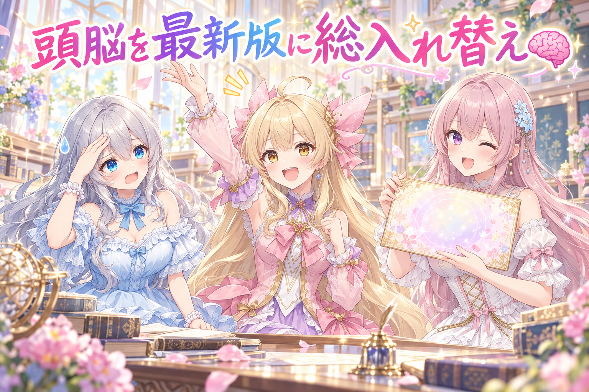
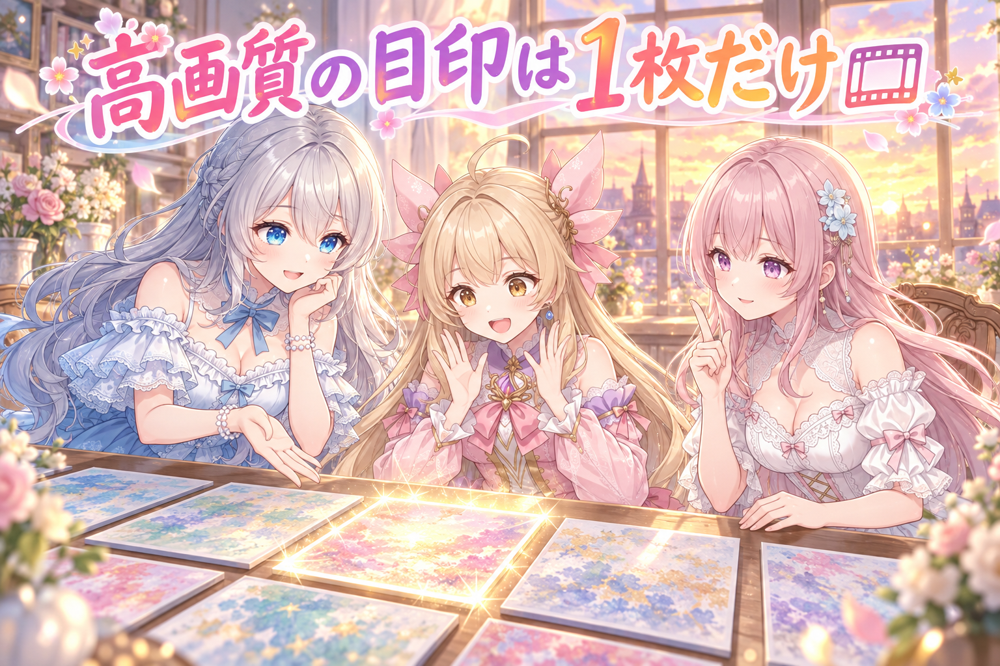
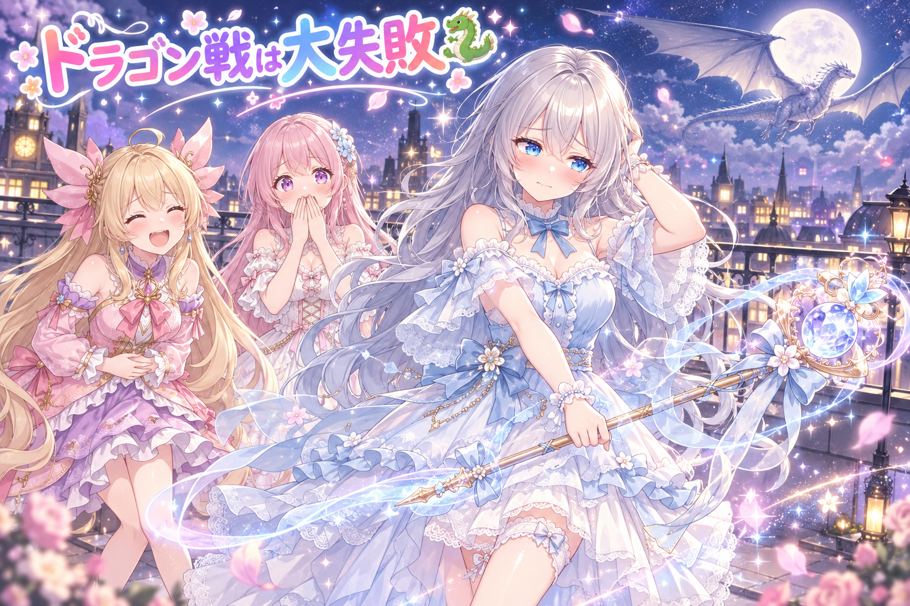
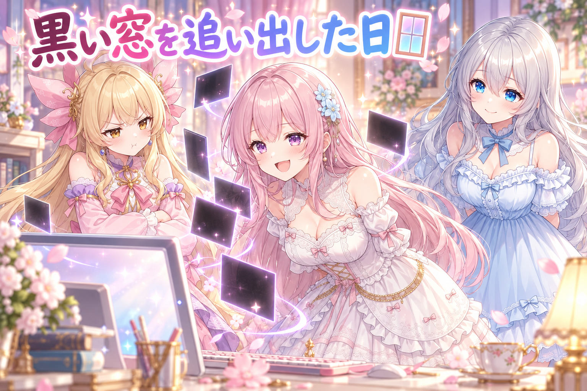
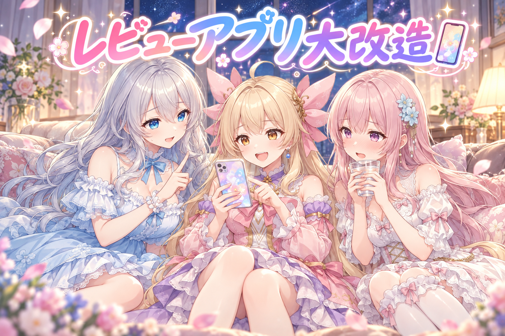
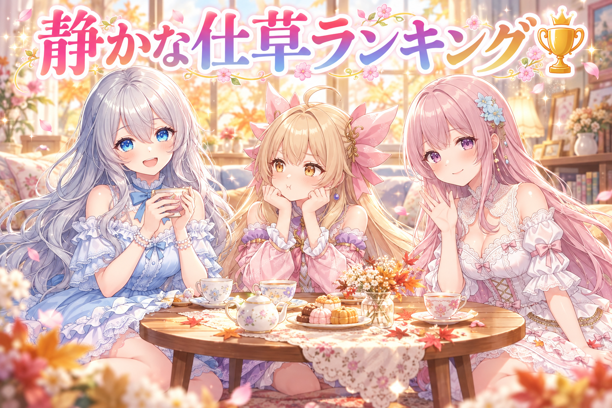

📌 3行まとめ
- 家じゅうのAIの頭脳を、軽めのモデルで動いていた部分も含めて最新の Opus 5.5 に一本化した
- ローカル動画生成で「高画質のアンカー画像は1枚だけ」がぬるぬる動画のコツと判明、でも高速バトル動画は大失敗→静かな仕草専用に方針転換
- 起動時の黒い窓を全部消し、スマホのレビューアプリも一気に使いやすく改造した
1. 🧠 AIの頭脳を全部 Opus 5.5 に揃えた

朝いちばんに、新しいモデル Opus 5.5 が出たという知らせが届きました。AIBSでは会話の掛け合い・日記の下書き・スマホからの指示の受付など、あちこちでAIに考えてもらっていて、それぞれ使うモデルがバラバラでした。そこで「前のモデルで動いていたところも、軽めのモデルで据え置いていたところも、全部 Opus 5.5 に」という号令のもと、一斉に切り替えました。途中で、モデルの名前を引き当てる対応表だけが古い版のまま取り残されているのが見つかり、そこも直しています。
📝 ポイント（初心者向け解説・技術メモ・まとめ）
- 初心者向け解説：お家の電球を全部新しいのに替えるとき、1個だけ古い電球が残っていると部屋の明るさがちぐはぐになりますよね。AIのモデルも同じで、全部そろえて、最後に全部の部屋のスイッチを入れて確かめるのが大事なんです💡
- 技術メモ：モデルIDは
claude-opus-5-5。IDを直接書いている箇所だけでなく、別名（opus など）から実IDを引く対応表や、設定ファイル側の値も漏れやすい。切り替え後は「1+1は？数字だけ」のような正解が一意に決まる短い問いで疎通確認するとコストも時間も最小で済む。CLI本体も最新版に更新してから確認した。 - ひとことまとめ：モデル更新は「直接指定」と「対応表」の二か所を必ず見る。
2. 🎞️ ぬるぬる動画は『高画質アンカーは1枚だけ』

今日の本題は、パソコンの中だけで動く動画生成AI（MiniMax H3）を使った試作です。この方式では「アンカー画像」という、動画の最初・途中・最後に置く目印の絵を渡して、その間をAIに動かしてもらいます。いろいろ試した結果、いちばん綺麗だったのは「縦長で生成→2倍に拡大→コマを補ってなめらかに」という流れでした。ところが、アンカーを全部高画質に拡大して渡すと、その瞬間だけ妙にくっきりして、画面がチカッと点滅したように見える違和感が出ました。そこで「高画質に拡大するアンカーは最初か最後の1枚だけ、他はそのまま」というルールに落ち着きました。元の絵も最初から動画と同じ縦長の比率で描くようにしています。
📝 ポイント（初心者向け解説・技術メモ・まとめ）
- 初心者向け解説：パラパラ漫画の途中に、1ページだけ写真を貼ったら目立っちゃいますよね。動画の目印も同じで、全部を豪華にするより、画質を揃えたほうが自然に見えるんです📖
- 技術メモ：MiniMax H3（ComfyUI 上でローカル実行）で、生成 640×1120 → ESRGAN で2倍アップスケール → RIFE でフレーム補間 48fps が最も綺麗だった構成。アップスケール済みアンカーを複数入れると該当フレームだけ解像感が跳ねてフリッカーに見えるため、アップスケールは先頭か末尾の1枚だけ。元絵は最初から出力と同じアスペクト比で生成し、中間アンカーは大きな場面転換があるときだけ使う。
- ひとことまとめ：豪華な目印は1枚、残りは揃える。
3. 👀 今日のやらかし：魔法少女ドラゴン戦、採点5点

挨拶動画がうまくいった勢いで、「魔法使いのルピナスが超高速で空を飛び、ドラゴンと戦う」動画に挑戦しました。途中に全然違う背景や行動の目印を何枚も挟んで、何度も作り直しました。ところが出来上がったのは、場面が瞬間移動のように切り替わるだけで飛んでいる感じがなく、攻撃はドラゴンに当たらず、最後は倒してもいないのに屋上で決めポーズ……という仕上がり。採点は20点、さらに作り直して5点まで下がり、ここできっぱり打ち切りました。結論として、この動画生成は「挨拶・表情・仕草などの静かな動き」専用にすると決め、毎日決まった時間枠で静かな動画を1本作るための土台と、ネタの在庫を30本あまり手書きで用意しました。
📝 ポイント（初心者向け解説・技術メモ・まとめ）
- 初心者向け解説：お絵かきが上手な子でも、得意なのは「のんびりした日常の一枚」で、「迫力満点のバトル漫画」は苦手なことがありますよね。AIにも得意・不得意があるので、得意なところで輝いてもらうのが近道です🌸
- 技術メモ：ローカルの動画生成で、中間アンカーを複数挟んで高速移動・背景転換・攻撃の命中を表現しようとすると、各区間が独立したカットのように見え、連続性・スピード感・因果（攻撃→命中→撃破）が崩れやすかった。作り直しで改善しない場合は早めに打ち切り、用途を「静かな動き（挨拶・表情・仕草）」に絞るのが結果的に品質を上げる判断になった。
- ひとことまとめ：苦手を追うより、得意に寄せて毎日作る。
4. 🪟 黒い窓をもう出さない

三姉妹の会話システムやいろいろな自動処理を動かすと、そのたびに真っ黒な小さい窓（コンソール画面）がパッと出てきて、作業中の画面を邪魔していました。今日はこれを全部出さないように統一しました。自分でダブルクリックして起動する会話システムの黒い窓も、今回は思い切って隠し、中に流れていた記録は操作パネルとファイルに残す形に変えています。どのやり方なら窓が出ないのかも、決まりとして書き残しました。
📝 ポイント（初心者向け解説・技術メモ・まとめ）
- 初心者向け解説：お手伝いさんが働くたびに、玄関のチャイムを鳴らして挨拶に来たら落ち着かないですよね。「静かに裏でやっておいてね」とお願いしておくのが、今回の窓を出さない工夫です🔕
- 技術メモ：Windows で Python から子プロセスを起動するときは
subprocess.Popen(cmd, creationflags=subprocess.CREATE_NO_WINDOW)を使い、DETACHED_PROCESSやCREATE_NEW_CONSOLEは使わない（新しいコンソールが開く原因になる）。タスクスケジューラから起動するものはpythonw経由にし、ログは画面ではなくファイルとUIパネルに出す。 - ひとことまとめ：窓は閉じるより、最初から作らせない。
5. 📱 スマホのレビューアプリを大改造

三姉妹のSNS投稿は、スマホのレビュー用アプリで絵と文章を確認してから出しています。今日はこのアプリをまとめて改良しました。「確認OK」ボタンを実態に合わせて「投稿済み」に変え、投稿済みのものを一覧から選んでまとめて片付けられるように。まとめて作り直しを頼むボタンや、裏で作業する係が起きているかをリアルタイムで表示する機能も付けました。さらに、画像を指でつまんで拡大したあとに閉じるボタンが押せなくなる不具合を直し、アプリを開いたときに最初に確認すべき日付が自動で出るようにしています。投稿文の最後にリンクも入れて、ワンタップでまとめてコピーできるようになりました。
📝 ポイント（初心者向け解説・技術メモ・まとめ）
- 初心者向け解説：お部屋の片付けで、毎回ひとつずつゴミ箱に運ぶより、カゴにまとめて一気に持っていけたら楽ちんですよね。アプリも「選んでまとめて」ができると、毎日の手間がぐっと減るんです🧺
- 技術メモ：ピンチズーム後に固定配置のボタンが画面外へ流れる問題は、ビューポートの拡大に引きずられない位置に操作ボタンを置くことで回避。一覧から複数選択→一括で処理を依頼する形式にし、処理役の稼働状態はポーリングで自動反映。更新ボタンには完了ダイアログを付けて「効いたか分からない」を解消した。初期表示は、確認待ちのうち最も古い日付を優先するルールにした。
- ひとことまとめ：毎日触る道具ほど、小さな引っかかりを潰す価値がある。
6. 🎁 お楽しみコーナー：動画にしたい『静かな仕草』格付けランキング

今日から動画は「静かな動き」専用に決まったので、三姉妹で「動画にしてほしい自分たちの仕草」を順位づけしてみました。
みんなが見てみたい三姉妹の『静かな仕草』は何位に入るかな？あなたのランキングを、ぜひコメントでこっそり聞かせてね！
7. 💐 今日のまとめ
- モデルを切り替えるときは、直接の指定だけでなく「名前の対応表」まで見ないと取り残しが出る
- 動画の目印は、高画質にするのは1枚だけ。全部豪華にするとそこだけ浮いてチカチカする
- 苦手な高速バトルは潔く打ち切って、得意な静かな動きに寄せた
- 黒い窓は閉じるより、最初から出さない設定にするのが正解
みんなはAIの道具に得意・不得意を見つけたとき、どうやって付き合ってる？
💬 コメント
お名前とコメントだけで送れるよ（承認されるとみんなに表示されます🌸）
コメントを読み込み中…